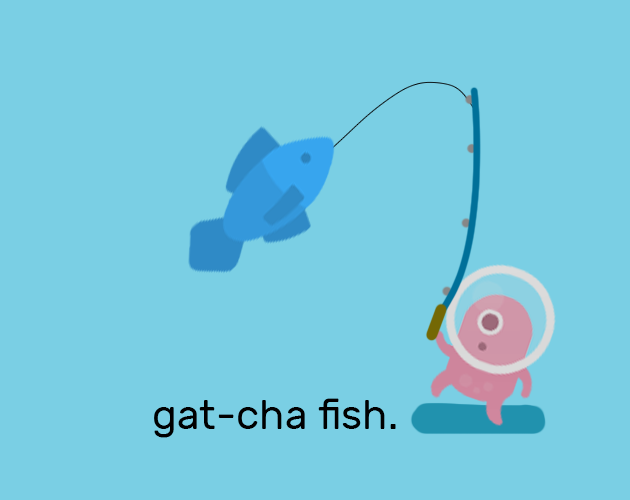

A game built around the idle-game trend at the time. The idea was something you leave running in the background: you hear a little ping, you know a fish is on the line, and you jump back to press the right sequence of buttons to reel it in. I wanted it to feel closer to real fishing.
I did a poor job of explaining that, and it was received badly because people expected a very active game when it was the opposite. That taught me to explain these games far more clearly — looking back, I understand the reaction.
- THERE IS NO SAVE STATE FOR THIS GAME
- Game can only be played on 700px or wider
Keep the game open with sound on. Every so often you will hear a ping, which means a fish is hooked. Mash W to start reeling, then follow the arrow prompts on screen. Press 2 for your Fish Collection, Y to buy a fish for $50, and U to buy the final item once you have $1,000. In the collection, P opens the menu and O sells whichever fish you are hovering over.